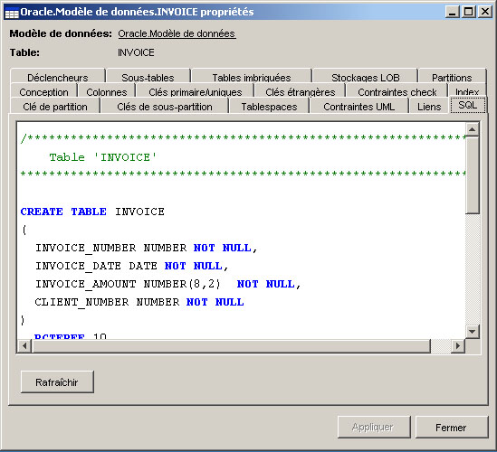
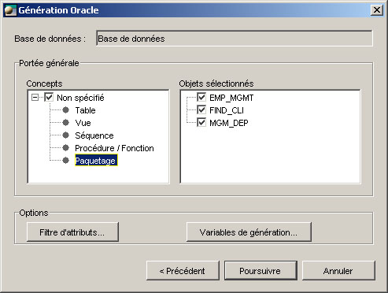

La
génération (forward engineering)
La génération est le processus de générer
le DDL pour créer des objets de schéma de
base de données. Open ModelSphere offre deux
façons de produire le DDL :
- Par l’objet : prévisualisation SQL et
génération du DDL.
- Globalement : la génération.
Par
l’objet
Les objets du modèle qui peuvent avoir un équivalent SQL
afficheront le code correspondant dans leur fenêtre
de propriétés sous l'onglet SQL. Cet onglet contient une
prévisualisation de la clause DDL. Il est
aussi possible de créer, du même objet, le fichier de
script DDL. Ceci est disponible
dans le menu contextuel de l'objet, choisissez Générer
> Énoncés DDL.

Un seul fichier est généré par objet choisi. Le
nom du fichier résultant
sera [nom de l'objet].sql.
Avant que vous n'exécutiez une génération,
n'oubliez pas de valider votre modèle. Voir La validation.
Il est préférable de régler l’option des
répertoires de génération du DDL. Voir Modification des options.
La
fonction globale
Une fonction de génération globale est également
disponible. Elle produira le DDL pour l'ensemble des objets contenus
dans les différents modèles liés à une
même base de donnée. Sélectionnez un modèle
et choisissez Outils > Base de données >
Génération.
Les objets suivants sont utilisés lors de la
génération :
 Base de données:
La base de données elle-même et ses concepts physiques.
Base de données:
La base de données elle-même et ses concepts physiques.
 Le modèle de
données : le modèle de données
déployé.
Le modèle de
données : le modèle de données
déployé.
 La
bibliothèque d’opérations : la bibliothèque
d’opérations déployée.
La
bibliothèque d’opérations : la bibliothèque
d’opérations déployée.
 Le modèle de
domaines : les objets du modèle de domaines
déployé ne sont
pas générés explicitement. Cependant, tout objet
du modèle de données et de
la bibliothèque d'opérations déployé, qui
font référence à un domaine, sera utilisé
dans le processus, et ce peu importe l'emplacement du domaine (i.e.
chaque
colonne de table a un type qui est généré dans le
DDL).
Le modèle de
domaines : les objets du modèle de domaines
déployé ne sont
pas générés explicitement. Cependant, tout objet
du modèle de données et de
la bibliothèque d'opérations déployé, qui
font référence à un domaine, sera utilisé
dans le processus, et ce peu importe l'emplacement du domaine (i.e.
chaque
colonne de table a un type qui est généré dans le
DDL).
Les
énoncés à générer

Vous trouverez, du côté gauche de cette fenêtre, la
liste des concepts qui peuvent être
générés. Chaque interface a une liste
différente.
- Create : génère des énoncés
SQL pour créer les concepts choisis. (ex. : créer la
table Employés).
- Drop : génère des énoncés SQL
pour supprimer les concepts choisis. (ex. :
supprimer la table Employés).
- Drop/Create : génère les
énoncés de suppression et les énoncés de
création
(ex. : Supprimer la table Employés... créer la table
Employés).
Vous devriez configurer les options du répertoire de
génération DDL.
La
portée générale
Pour chacun des concepts disponibles pour un utilisateur choisi, il est
possible de choisir les objets que vous voulez générer.

Les
variables de génération
Les variables de génération vous permettront d'ajuster
des options qui sont pour la plupart spécifique à
l'interface SGBD.
Pour
qu’un élément soit généré, il faut
à la fois qu’il soit sélectionné
dans les fenêtres appropriées de la
génération.
MySQL utilise une syntaxe spéciale
pour les clés étrangères. Il est possible
d'activer cette systaxe en sélectionnant l'option Activer les contraintes de clés
étrangères MySQL.
Les énoncés DDL sont produits par un fichier gabarit
(.tpl). C'est un fichier texte qui
peut être modifié par tout utilisateur qui est familier
avec le langage de gabarit. Voir Les
gabarits.
Voir aussi: Exécution du
code SQL.